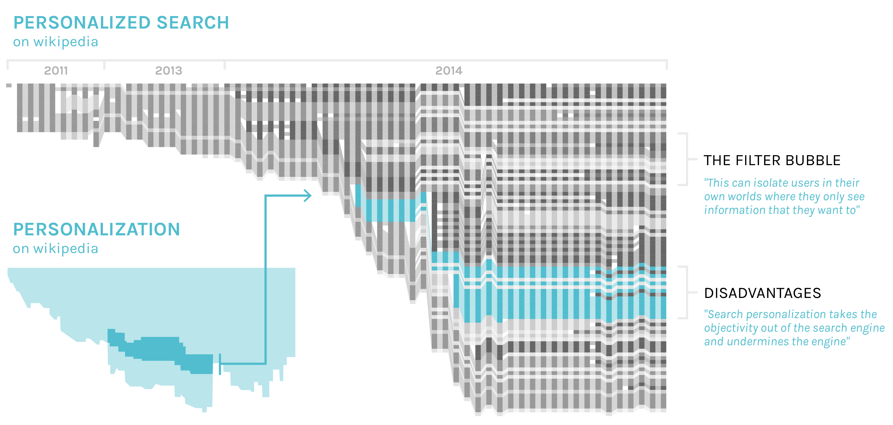

Findings
The main reason we decided to make this graph was to better understand the areas that were involved in this topic in order to be able to formulate a proper research question. We were able to identify 4 main clusters which are Society, Technology, Privacy & control and Marketing. In this way we understood that Society is most important part and it comprehends the social media aspect and the online identity with digital traces and digital identity. It also englobe the mass customization and collective intelligence with the relevance paradox, collaborative filtering and filter bubble. The technology side was mainly composed by the data mining, the predictive analysis and the simulated reality part. Another important aspect of Web Personalization is the one about the privacy and control, with a big part about control and the mass surveillance and a smaller part about the privacy on the internet. Last but not least the marketing side, with all its aspects of internet marketing.
This map gave us a general idea of the areas involved and was also useful to better comprehend which aspects were more important to investigate.
Finding 01
In the analysis of the main page of our topic, we found out that a section about what are the advantages and the disadvantages of the theme were deleted in 2011, and moved to another page.
The new page with this paragraph is “Personalized search” which includes, not only these important parts about the debate, but also a paragraph about the main debate of the Web Personalization, called “Filter Bubble”.
